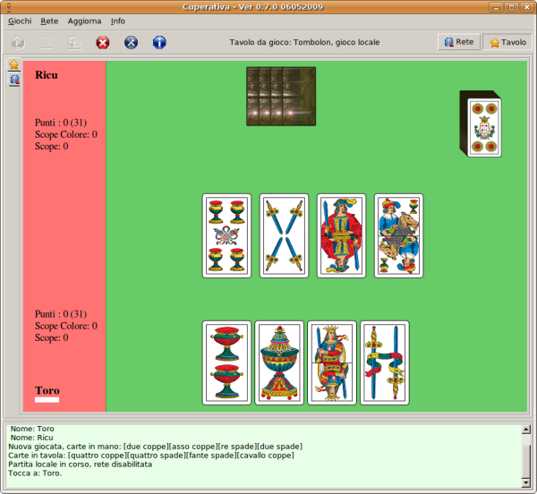

Precedente | Contenuto | Prossimo
Il programma Cuperativa è un software per giocare a carte contro il computer, oppure online contro altri giocatori. La home del progetto si trova al link: cuperativa.invido.it e su briscola.rubyforge.org mentre il mio sito di riferimento è www.invido.it
Con la versione 0.8.2 è stato corretto il salvataggio dei settings e le carte prese nel tressette
Con la versione 0.8.1 è stata migliorata la stabilità nel gioco in rete e la gestione delle animazioni durante la partita.
Con la versione 0.8.0 è stato aggiunto il gioco del Tressette. Sono stati corretti anche piccoli bug nei giochi come il tombolon. È stata migliorata la forza del gioco del computer nel gioco della scopetta. È stata migliorata l'interfaccia per il gioco in rete, con la finestra della chat accanto a quella del log.
Con la versione 0.7.5 è stato aggiunto il gioco del Briscolone. L'interfaccia grafica è cambiata e sono stati aggiunti degli effetti sonori.
Con la versione 0.7.1 sono stati corretti numerosi errori.
Con la versione 0.7.0 viene aggiounto il gioco del Tobolon. Nel gioco online è possibile giocare per la classifica.
Con la versione 0.6.1 viene aggiounto il gioco della scopa.
Con la versione 0.6.0 viene aggiunto il gioco dello spazzino. Nel gioco online è ora possibile creare giochi privati.
Con la versione 0.5.4 il gioco viene distribuito in modo diverso dalle versioni precedenti. Vi è una parte contenuta nella directory app, dove cuperativa è installata, nella quale sono presenti i sorgenti del programma. L'aggiornamento del programma può avvenire cambiando il contenuto della directory app/src. Qualora qualcuno desiderasse aggiornare il gioco lo può fare senza problemi: basta cabiare gli script contenuti nella directory app/src e far ripartire il programma.
Questa è l'immagine iniziale del programma:

I giochi supportati sono:
I giochi sono disponibili in modalità simulazione, dove l'avversario è gestito dal programma, oppure in modalità di rete. Nella modalità in rete si possono raggiungere avversari che si collegano al server della cuperativa online. Per giocare online occorre prima registrasi su sito cuperativa.invido.it.